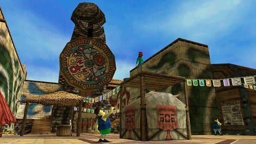
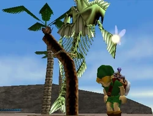
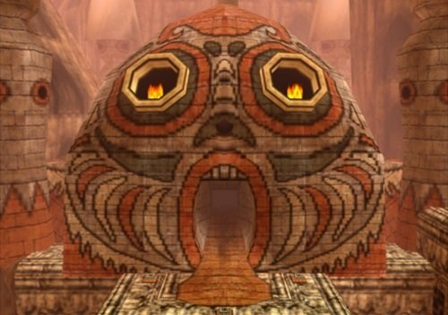

Teoría de las etapas del duelo en Majora's Mask
Nintendo es una compañía que se caracteriza por tener un enorme porcentaje de videojuegos orientados a un público joven-infantil. Si damos un repaso a sus juegos lanzados en la última década, podemos darnos cuenta de ello, sin embargo, de vez en cuando, lanzan algún título el cual asombra al público más maduro, y ese es el caso de The Legends of Zelda: Majora's Mask.
Majora's Mask es un videojuego que ha traído muchas teorías por parte de la comunidad. La razon de ello es que es uno de los juegos más oscuros de la saga, ya no se trata de salvar a una doncella que está secuestrada a manos de algún villano, ahora es tratar de evitar una destrucción masiva que es causada por una máscara maldita.
Entre todas estas teorías, hay una que resulta muy interesante. Se trata sobre la muerte de Link y las 5 etapas del duelo. Según algunas personas que apoyan esta teoría, en el momento que link cae por el precipicio del “Bosque perdido”, él muere y entra en un mundo llamado “Termina” el cual sería el lugar donde viviría las 5 etapas del duelo.
Antes de continuar debemos entrar un poco en contexto referente a dichas etapas. Primero vamos a citar un concepto fundamental: el duelo. El duelo se puede definir como un proceso interno que se produce ante la pérdida de una relación afectiva, sea del tipo que sea, pudiendo ir desde la pérdida de un trabajo, un cambio de residencia, la ruptura de una relación de pareja hasta la muerte de un ser querido
En este caso, Link al perder su amiga Navi(que lo acompaña en todo momento en Ocarina Of Time) entraría en las etapas del duelo. Justamente, la intención de ir al bosque oscuro, desde un principio, era encontrarla, pero en lugar de eso se encontraría con un destino que para muchos puede ser terrorífico.
Etapa de la negación
Una vez que Link entra al nuevo mundo, empezaría a notarse la primera etapa del duelo llamada “Negación”. Esto se representa a través de los integrantes de la Ciudad Reloj, que están pendientes de celebrar un evento llamado Carnaval y hacen caso omiso a un peligro inminente que cada minuto asecha en los cielos, una Luna con una horrorosa cara que baja lentamente para chocarse contra el pueblo.
Todos los integrantes del pueblo simplemente ignoran este hecho. Inclusive, lo consideran algo ridículo e imposible.
Etapa de la ira

El Bosque Catarata sería el lugar donde se interpretaría la etapa de la ira. Aquí encontraremos al Rey Deku quien, sin ninguna prueba o fundamento, acusa que un mono ha secuestrado a su hija, la princesa Deku. Los que Apoyan esta teoría señalan que la descomunal furia que siente el rey es una señal muy clara de la etapa de la ira.
Etapa de la negociación

El pico de la montaña es el lugar que desarrolla la tercera etapa. En este, encontramos al fantasma del Goron Darmani, él cual está deambulado por el lugar lamentándose de haber perdido la vida y no poder salvar a sus compañeros cuando lo necesitaron. Esto repercute que se encuentre en una constante negociación con él mismo, ya que aún no acepta que está muerto.
Etapa de la depresión
La gran Bahía de los Zora es el siguiente lugar donde nuestro héroe debe dirigirse. Aquí conoceremos a Lulu, una Zora que está viviendo una terrible depresión debido a que un grupo de piratas había secuestrado a sus hijos y a que Mikau, guitarrista de la banda en la cual ella cantaba y su pareja, estaba desaparecido, luego que fuera a tratar de salvar a sus hijos, quedando herido de muerte en el intento. Esto conllevó a que ella perdiera su dulce voz en el peor momento posible, ya que, junto con su banda, pronto tenian que dar un importante concierto.
Etapa de la aceptación
La última de las etapas se desenvolvería en el Cañón Ikana. Nuestro héroe debe superar diferentes dificultades usando a 4 estatuas, las cuales son las etapas anteriormente vividas. Al aceptarlas y superarlas tiene como resultado las flechas de Luz que sería una metáfora, la cual indica que nuestro héroe cumplió con la etapa de la aceptación.
Esta teoría es considerada por varios de los amantes de este videojuego como algo un poco fuera de lugar. Sin embargo, en el mundo de los videojuegos cada quien es libre de interpretar la historia o argumentos de un juego como desee. Majora's Mask es uno de esos títulos que pueden ser interpretados de muchas formas y gracias a eso podemos ver teorías tan interesantes como la anteriormente descrita.